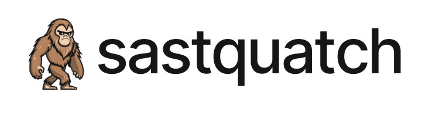
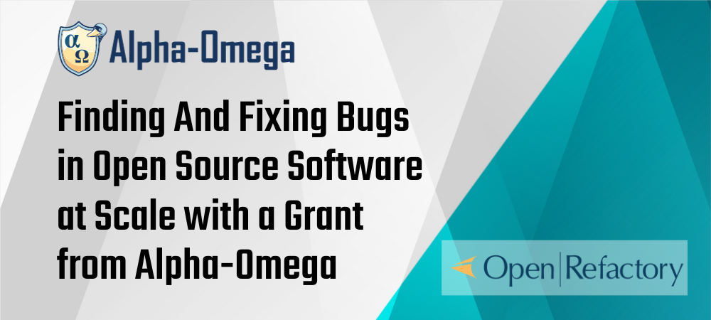
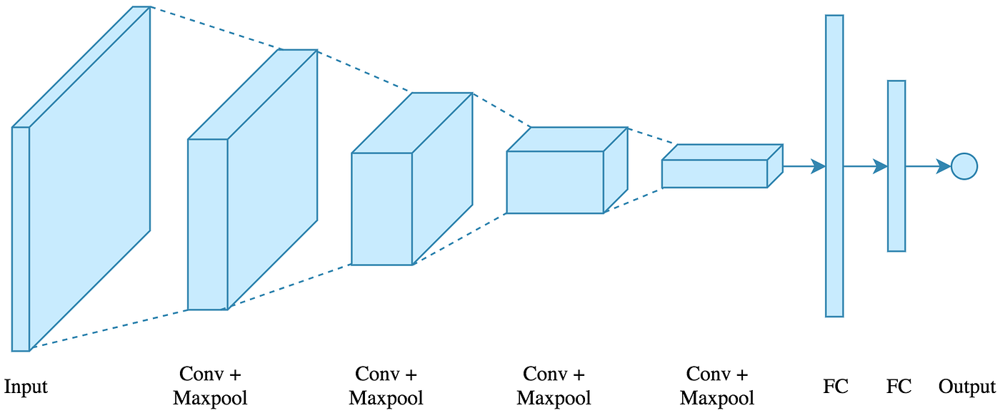
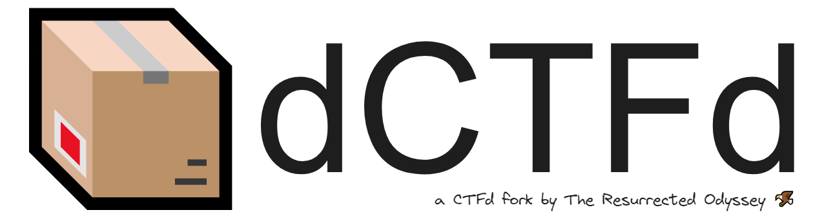
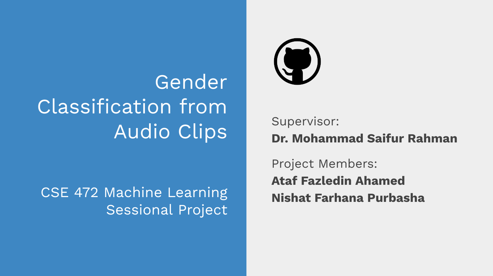
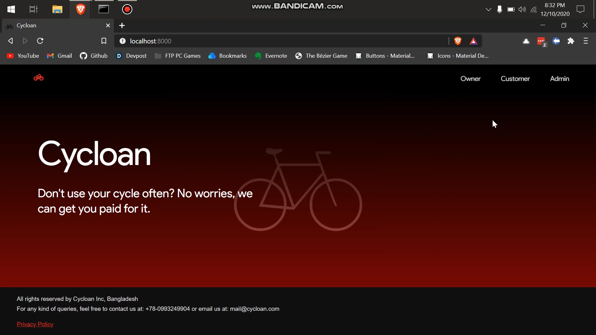

Hi, I am Ataf (he/him), a CSE graduate from Department of CSE, BUET . My key interests lie in the fields of software, systems, and network security. Currently, I’m looking for PhD supervisors for Fall 2025 semester.
My career goal is to pursue a PhD in my field of interests. I’m working with Prof. Anindya Iqbal and Prof. Gias Uddin on a project regarding the effectiveness of static analysis tools in detecting vulnerabilities.
I work as a Software Security Engineer at OpenRefactory . An important part of my work is OpenSSF’s Project Alpha-Omega where we find and fix vulnerabilities in popular open source projects .
During my undergraduate life, I participated in different competitions- CTF, hackathons, etc. My team once became third in Bangladesh National Cyber Drill competition . I enjoy contributing to open source projects. I have contributed to popular projects such as- dapr , kubernetes , google bigquery python , web3.py , django-helpdesk , etc. I have 60+ merged pull requests on GitHub .
I’m an adaptive learner and a hard working person. I have prior leadership experience in academic projects and extra-curricular areas. As a team player, I do my best and over to fulfill the responsibilities given to me. I truly believe that having clear communication among a group is most vital for its success.
Education
Bachelor of Science, Computer Science & Engineering
Bangladesh University of Engineering & Technology
April 2018 - May 2023
CGPA: 3.50 out of 4.00 (Final Year: 3.75)
Notable Courses:
- CSE 405 - Computer Security
- CSE 471 - Machine Learning
- CSE 461 - Algorithm Engineering
- CSE 423 - Fault Tolerant Systems
- CSE 321 - Computer Networks
- CSE 313 - Operating Systems
Higher Secondary Certificate
Notre Dame College, Dhaka
June 2015 - May 2017
GPA: 5.00 out of 5.00 (Talentpool Scholarship)
Research
Interaction and NLP Based Sentiment Analysis of Bangla Food Review in Social Media
Undergraduate Thesis
Supervisor: Dr. Sadia Sharmin (BUET)
GitHub | Draft Paper | Thesis Book
In this study, we collected data from different Facebook pages to analyze the sentiment of social media users regarding food review. For this, we used reactions and comments to analyze the sentiment in two independent ways. This work was submitted to ASONAM 2023.
Devising A Low-Cost and Portable System for Remotely Monitoring Water Quality in Real-Time
CSE316: Microprocessor, Microcontroller, and Embedded Systems Project
Supervisor: Dr. A.B.M. Alim Al Islam (BUET)
Based on our microcontroller project, we wrote a conference paper for our device and its capability to remotely monitor water quality as a cost-effective solution. This work was submitted to NSysS 2021, however it was rejected due to lack of novelty.
Projects
Sastquatch
|  |
|
Project Alpha Omega by OpenSSF
|  |
|
Convolutional Neural Network Model from Scratch
|  |
|
dCTFd
|  |
|
Gender Classification from Audio Clips
|  |
|
EventFly: A Web-based Event Management Tool

|
|
Cycloan: A Real-time Cycle Sharing Platform
|  |
|
Work
Software Security Engineer
OpenRefactory Inc.
July 2023 - Present (Full Time)
Fullstack Web Developer
Mindshare Bangladesh
June 2021 - Nov 2021 (Contractual)
Skills
Programming Languages, Frameworks, Databases
Python,JavaScript,C/C++,Java,GoExpressJS,Django,Flask,React,NextJSPostgreSQL,MongoDB,MySQL,OracleDB
Development & Other Tools
Git,Bash,Docker,Jenkins,NGINX
Security Tools
BurpSuite,Wireshark,NmapdnSpy,Ghidragobuster,dirbCodeQL,Semgrep
Machine Learning Libraries
Tensorflow,PyTorch,Keras
Extracurricular
President
BUET Entrepreneurship Development Club
May 2022 - May 2023
Vice-President, Co-Founder
BUET Cyber Security Club
Nov 2022 - May 2023
Coordinator, Media & Events
BSADD - BUET System Analysis, Design and Development community
June 2020 - May 2023
Achievements
-
Achieved 3rd position in National Cyber Drill 2022 as team BUET Fsociety | News Link
-
Achieved 13th position in University Cyber Drill 2022 as team BUET Fsociety
-
Achieved 6th position in National Cyber Drill 2021 as team Knight Squad
-
Received a Military Appreciation Coin from the US Embassy Dhaka
CV
My latest CV can be found here .